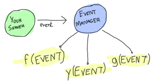

Erlang & Elixir
by Bartosz Ptaszynski
Who am I?
Polyglot programmer and programming languages tourist
What is Erlang?
a general-purpose programming language and runtime environment. Erlang has built-in support for concurrency, distribution and fault tolerance.
Erlang is a concurrent language which is used to develop naturally clustered large scale applications. This is one of the only languages today that has been designed to get massive.
Mickaël Rémond @ process-one.net
Erlang's design decisions
a functional language (no objects!)
a language designed in 1986 to solve specific telecom challenges
ideal for implementing applications that require high concurrency
ideal for implementing highly available/fault tolerant systems
great for writing distributed applications (on Erlang clusters)
has to "run forever" - hot code swapping, hot upgrades, high availability, process supervisors with failure handling and recovery policies
Fault tolerant means at least two servers
Hardware fails, don't depend that it does not
Fault tolerant means your application can fail too!
Failures WILL happen, design to handle them
Limit the blast radius of potential failures by design
Erlang comes with OTP framework to help you do that and more!
Erlang is functional
Erlang
- is byte compiled to BEAM and run on ErlangVM (EVM), similar to Java code on JVM
- shares nothing between processes
- data types are immutable
- is using all the cores on the machine it runs on (and is NUMA aware)
- is capable of running applications seamlessly across (up to hundreds of) physical servers
- is able to spawn hundreds of thousands of processes on a single server
- is preemptive scheduling between Erlang's micro-processes (no need to yield etc.) each process gets a share of CPU time
- applications/servers don't need to be stopped for upgrades thanks to hot code swapping
- has built in error recovery support
- is around for 25+ years - very mature, industry proven, comes with lots of tools and frameworks
- can run on tiny, low power devices as well as on latest and most powerful servers
- can be extended with other programming languages (C/C++, Java, Python, Ruby etc)
Erlang Processes
- very lightweight - newly spawned process is just over 300 words - word is 4 (32bit) or 8 (64bit) bytes
- behind the scenes they are just function code (stack) and some data (heap)
- you can spawn a lot of them - there's a benchmark spawning 20mil processes
- efficient per process garbage collection
- processes communicate via async messages
- sending messages is very cheap
- processes behave same way on different hardware architectures
- processes can monitor each other
- processes can be linked together for process termination propagation
- remote processes appear and communicate same way as local
- can register names locally (same node) or globally (on whole cluster) and be accessed by their name
Prepare for lightspeed
I'll fly thgough this part so don't worry if you don't catch everything
Some syntax weirdness
Periods . end everything except when
Semicolons ; end clauses
and Commas , separate expressions
Single assignment variables
~> erl
Erlang R16B01 (erts-5.10.2) [source] [64-bit] [smp:8:8] [async-threads:10] [hipe] [kernel-poll:false] [dtrace]
Eshell V5.10.2 (abort with ^G)
1> A = 1. % variables must start with capital letter
1
2> B = (2 * A) + 3.
5
3> B = 3. % once assigned, they cannot change!
** exception error: no match of right hand side value 3
4>
Wot?
There are no loops (while, for, etc)
Use recursive functions instead
Strings
1> MyStr = "abcd".
"abcd"
2> MyStr = [97, 98, 99, 100]. % wait.. what?!
"abcd"
3> lists:sort("dcba"). % because they are lists we can do things like this
"abcd"
4>
Strings are just lists
Some cool things
List comprehension
1>[2*N || N <- [1,2,3,4]]. % list comperhension!
[2,4,6,8]
2> [X || X <- [1,2,3,4,5,6,7,8,9,10], X rem 2 =:= 0].
[2,4,6,8,10]
3> [X+Y || X <- [1,2], Y <- [2,3]].
[3,4,4,5]
4> Weather = [{toronto, rain}, {montreal, storms}, {london, fog},
4> {paris, sun}, {boston, fog}, {vancouver, snow}].
[{toronto,rain},
{montreal,storms},
{london,fog},
{paris,sun},
{boston,fog},
{vancouver,snow}]
5> FoggyPlaces = [X || {X, fog} <- Weather]. % pattern matching in list comperhension!
[london,boston]
Binaries and Bit Syntax
1> Color = 16#F09A29.
15768105
2> Pixel = << Color:24 >>.
<< 240,154,41 >>
3> << R:8, G:8, B:8 >> = << Color:24 >>.
<< 240,154,41 >>
7> R.
240
8> << R:8, Rest/binary >> = Color.
<< 240,154,41 >>
9> R.
240
10> << SourcePort:16, DestinationPort:16,
AckNumber:32,
DataOffset:4, _Reserved:4, Flags:8, WindowSize:16,
CheckSum: 16, UrgentPointer:16,
Payload/binary >> = SomePacket.
Binary comprehension
1> [ X || << X >> <= << 1,2,3,4,5 >>, X rem 2 == 0].
[2,4]
2> Pixels = << 213,45,132,64,76,32,76,0,0,234,32,15 >>.
<< 213,45,132,64,76,32,76,0,0,234,32,15 >>
3> RGB = [ {R,G,B} || << R:8,G:8,B:8 >> <= Pixels ].
[{213,45,132},{64,76,32},{76,0,0},{234,32,15}]
4> << << R:8, G:8, B:8 >> || {R,G,B} <- RGB >>.
<< 213,45,132,64,76,32,76,0,0,234,32,15 >>
Atoms
Similar to Ruby symbols, used to represent non-numerical constants, ie. true, ok, blah, error
1> ok.
ok
2> error.
error
3> true.
true
4> A = false.
false
5> A.
false
6> {ok, "success"}.
{ok,"success"}
7>
Tuples
Fixed length collection of items - the workhorse of Erlang
1> X = 10, Y = 4.
4
2> Point = {X,Y}.
{10,4}
3> Point = {4,5}.
{4,5}
4> {X,Y} = Point.
{4,5}
5> X.
4
6> {X,_} = Point.
{4,5}
7> {_,_} = {4,5}.
{4,5}
8> {_,_} = {4,5,6}.
** exception error: no match of right hand side value {4,5,6}
9> {point, {X,Y}}.
{point,{4,5}}
Other data types
- proplist - property list
- dict - dictionary/hash table
- orddict - ordered dictionary
- gb_trees - general balanced trees
- ordsets - ordered sets
- gb_sets - general balanced sets
- sofs - sets of sets
- digraph - directed graphs
- queue - all kind of queue implementations
Functions and pattern matching
calculate_area({square, Size}) ->
Size * Size;
calculate_area({rect, A, A}) ->
calculate_area({square, A});
calculate_area({rect, A, B}) when is_integer(A), is_integer(B) ->
A * B;
calculate_area({circle, Radius}) Radius > 0, is_integer(Radius) ->
Pi = 3.14,
Pi * Radius * Radius;
calculate_area(_Unknown) ->
unknown.
Anonymous functions
lists:map(fun(X) -> X * X end, List).
% or
F = fun(X) ->
X * X
end.
lists:map(F, List).
Modules
useless.erl
-module(useless). % module declaration, has to match the name of the file
-export([add/2, hello/0, hello/1, greet_and_add_two/1]). % declare which functions to export
% this is a list of function names and their arity (number of arguments)
add(A, B) ->
A + B.
%% Shows greetings.
%% io:format/1 is the standard function used to output text.
hello() ->
io:format("Hello, world!~n"). % this is the only definition of hello/0 so we finish it with a dot
hello({name, Name}) ->
io:format("Hello there, ~n!", [Name]); % we are not finished yet with defining hello/1
hello(Other) ->
io:format("Hey, ~n whatever you are!", [Other]). % this is last definition of hello/1
greet_and_add_two(X) ->
hello(),
hello({name, "Bob"}),
hello("Thing"),
add(X, 2).
Conditionals
case Expression of
{run_command, Cmd} ->
do_something(Cmd);
_ -> % anything starting with underscore means 'ignore this' or 'anything'
ok
end.
Tail recursion
print_each([]) ->
ok;
print_each([H|T]) ->
io:format("~p~n", [H]),
print_each(T). % tail recursion is safe - does not build up stack
Spawning new process
F = fun() ->
io:format("Hi")
end.
Pid = spawn(F).
Pid = spawn(io, format, ["Hi"]). % spawn(Module, Function, Args)
Pid = spawn('node1@somehost', io, format, ["Hi"]). % spawn(Node, Module, Function, Args)
Message passing
Pid ! Message.
Pid ! {run_command, shutdown}.
Pid ! 42.
receive
{run_command, Cmd} ->
io:format("Running command ~p~n", [Cmd]);
Data when is_integer(Data) ->
io:format("Got a number ~p~n", [Data]);
Data ->
io:format("Got something ~p~n", [Data])
end.
Let's implement a Chat Server
Ready?
my_server.erl
-module(my_server).
-export([listen/2, simple_server/1]).
-define(TCP_OPTIONS, [binary, {packet, 0},
{active, false}, {reuseaddr, true}]).
start_registry() ->
register(socket_mgr, self()),
registry([]).
registry(Sockets) ->
receive
{connected, Pid, Socket} ->
erlang:monitor(process, Pid),
registry([{Pid, Socket}|Sockets]);
{'DOWN', _Ref, process, DeadPid, _Reason} ->
registry(proplists:delete(DeadPid, Sockets));
{send, Msg} ->
lists:map(
fun({_Pid, Socket}) -> gen_tcp:send(Socket, Msg) end,
Sockets
),
registry(Sockets);
_ -> registry(Sockets)
end.
send(Msg) ->
lists:map(
fun(Node) -> {socket_mgr, Node} ! {send, Msg} end,
[node() | nodes()]
).
listen(Port, Handler) ->
{ok, LSocket} = gen_tcp:listen(Port, ?TCP_OPTIONS),
spawn(fun() -> start_registry() end),
accept(LSocket, Handler).
accept(LSocket, Handler) ->
{ok, Socket} = gen_tcp:accept(LSocket),
Pid = spawn(fun() -> Handler(Socket) end),
socket_mgr ! {connected, Pid, Socket},
accept(LSocket, Handler).
simple_server(Socket) ->
case gen_tcp:recv(Socket, 0) of
{ok, Data} ->
send(Data),
simple_server(Socket);
{error, closed} -> ok
end.
% savvy?
Let's see how this works
Erlang
Shell
> erl -sname b1
Erlang R16B01 (erts-5.10.2) [source] [64-bit] [smp:8:8] [async-threads:10] [hipe] [kernel-poll:false] [dtrace]
Eshell V5.10.2 (abort with ^G)
(b1@bart-mbp)1> c(my_server).
{ok,my_server}
(b1@bart-mbp)2> my_server:listen(8888,
fun(Sock) -> my_server:simple_server(Sock) end).
> telnet localhost 8888
Trying ::1...
telnet: connect to address ::1: Connection refused
Trying 127.0.0.1...
Connected to localhost.
Escape character is '^]'.
blah
blah
hey there :)
how ya doin?
how ya doin?
> erl -sname b2
Erlang R16B01 (erts-5.10.2) [source] [64-bit] [smp:8:8] [async-threads:10] [hipe] [kernel-poll:false] [dtrace]
Eshell V5.10.2 (abort with ^G)
(b2@bart-mbp)1> nodes().
[]
(b2@bart-mbp)2> net_adm:ping('b1@bart-mbp').
pong
(b2@bart-mbp)3> nodes().
['b1@bart-mbp']
(b2@bart-mbp)4> my_server:listen(8887,
fun(Sock) -> my_server:simple_server(Sock) end).
> telnet localhost 8887
Trying ::1...
telnet: connect to address ::1: Connection refused
Trying 127.0.0.1...
Connected to localhost.
Escape character is '^]'.
blah
hey there :)
hey there :)
how ya doin?
What is Elixir?
Elixir is a functional meta-programming aware language built on top of the Erlang VM. It is a dynamic language with flexible syntax with macros support that leverages Erlang's abilities to build concurrent, distributed, fault-tolerant applications with hot code upgrades.
Jose Valim @ elixir-lang.com
Influences
Erlang
- Compiles to Erlang Bytecode
- Actor Model
- Message Passing, OTP
- Pattern matching
- Guards
- Hot code swapping
Ruby
- Syntax
- Dependency management
Clojure/Lisp
- Macros
- Leiningen build tool
- Protocols
- Includes/Imports/Refers
Elixir at a glance
defmodule Math do
def sum(a, b) do
do_sum(a, b)
end
defp do_sum(a, b) do
a + b
end
def zero?(0) do
true
end
def zero?(x) when is_number(x) do
false
end
end
Math.sum(1, 2) #=> 3
Math.do_sum(1, 2) #=> ** (UndefinedFunctionError)
Math.zero?(0) #=> true
Math.zero?(1) #=> false
Math.zero?([1,2,3]) #=> ** (FunctionClauseError)
Comprehension
iex> lc n inlist [1,2,3,4], do: n * 2
[2,4,6,8]
# or using block
iex> lc n inlist [1,2,3,4] do
...> n * 2
...> end
[2,4,6,8]
iex> lc x inlist [1,2], y inlist [2,3], do: x*y
[2,3,4,6]
iex> lc n inlist [1,2,3,4,5,6], rem(n, 2) == 0, do: n
[2,4,6]
Strings
iex> "hello" == 'hello'
false
iex> is_binary "hello"
true
iex> is_list 'hello'
true
iex> string = "é" # unicode support!
"é"
iex> size(string)
2
iex> name = "world"
iex> "hello #{name}" # string interpolation!
"hello world"
Blocks
iex> if true do
...> a = 1 + 2
...> a + 10
...> end
13
iex> if true, do: (
...> a = 1 + 2
...> a + 10
...> )
13
Control flow
case { 1, 2, 3 } do
{ 4, 5, 6 } ->
"This won't match"
{ 1, x, 3 } ->
"This will match and assign x to 2"
_ ->
"This will match any value"
end
unless true do
"This will never be seen"
end
if false, do: 1 + 2, else: 10 + 3
if false do
1 + 2
else
10 + 3
end
cond do
2 + 2 == 5 ->
"This will never match"
2 * 2 == 3 ->
"Nor this"
true ->
"This will always match (equivalent to else)"
end
Calling Erlang
iex> :lists.flatten [1,[2],3]
[1,2,3]
iex> :math.sin :math.pi
1.2246467991473532e-16
Functions
f = fn
x, y when x > 0 -> x + y
x, y -> x * y
end
f.(1, 3) #=> 4
f.(-1, 3) #=> -3
Protocols
defprotocol Blank do
@doc "Returns true if data is considered blank/empty"
@only [Atom, List, BitString, Any]
def blank?(data)
end
defimpl Blank, for: BitString do
def blank?(""), do: true
def blank?(_), do: false
end
defimpl Blank, for: List do
def blank?([]), do: true
def blank?(_), do: false
end
# Just the atoms false and nil are blank
defimpl Blank, for: Atom do
def blank?(false), do: true
def blank?(nil), do: true
def blank?(_), do: false
end
# anything else is not blank
defimpl Blank, for: Any do
def blank?(_), do: false
end
Blank.blank?(0) #=> false
Blank.blank?([]) #=> true
Blank.blank?([1,2,3]) #=> false
Processes and Messaging
# Get the current process id
iex> current_pid = self()
# Spawn another process that will send a message to current_pid
iex> spawn fn ->
current_pid <- { :hello, self() }
end
<0.36.0>
# Collect the message
iex> receive do
...> { :hello, pid } ->
...> IO.puts "Hello from #{inspect(pid)}"
...> after
...> 1000 -> # 1 second
...> IO.puts "Too late"
...> end
Hello from <0.36.0>
Elixir Chat Server
Oh, the OTP
Framework that makes all the difference
What is OTP?
formalizes structure for applications
provides behaviours - callback templates (design patterns) for your code
Applications, Supervisors and Workers
- application - defines how application is implemented
- supervisor - defines supervisor trees, restart strategies and workers
- gen_server - behaviour for server type workers
- gen_fsm - behaviour for creating finite state machines
- gen_event - behaviour for creating event handlers
Application

image from LearnYouSomeErlang.com
contains list of modules and arguments in your application
is responsible for starting and stopping supervisor(s) your application needs
Supervisor

image from LearnYouSomeErlang.com
responsible for starting and maintaining workers and other supervisors
defines restart strategy for processes - it's the heart of the robustness of Erlang applications!
Generic Server gen_server
a template for client/server application workers
you may think of it as abstract class
your code is a collection of callbacks - the process is managed by OTP
you can implement sync and async calls with handle_call and handle_cast callbacks
Finite State Machine gen_fsm

image from LearnYouSomeErlang.com
behaviour for defining FSM
Events gen_event
image from LearnYouSomeErlang.com
behaviour for custom event handlers
used to implement efficient message dispatching between processes
If your server has many subscribers, it can keep going because it only needs to forward events once
You don't need to spawn processes for short lived tasks
OTP in Erlang
OTP in Elixir
Testing
Building
Who is using Erlang?
Ericsson - AXD 301, GPRS, LCS
Erlang Financial Systems - Banking & Lottery systems
Nortel - VPN gateway + others
Facebook - Messenger chat
Google - GTalk
Amazon - SQS and SimpleDB
Microsoft - Bing search
EMC/VMWare - RabbitMQ
MochiMedia - Flash ads middleware
Del.icio.us/Yahoo - social bookmarking
AOL
Links
erlang
elixir
Learn You Some Erlang
Things I didn't talk about
ETS/DETS
Mnesia
Elixir macros
exception handling
Questions?
Thanks!
Bart Ptaszynski @foobarto | bart@yazzgoth.com